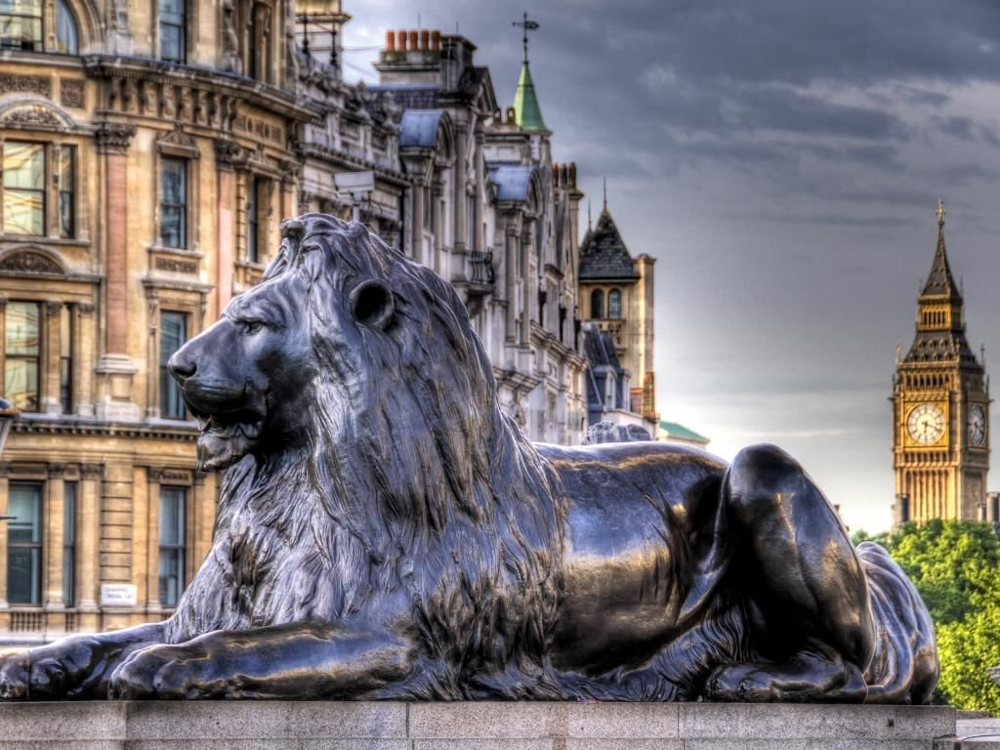

Trafalgar Square, piata situata in partea centrala a orasului este un obiectiv turistic foarte important din Londra. O vizita in capitala Regatului Unit ar fi incompleta fara o vizita la minunata Coloana a lui Nelson si cei patru lei de la baza sa, pentru a admira fantanile sau pentru a grani pinguinii. Construita pentru a il comemora pe Amiralul Nelson, piata a fost botezata dupa Capul Trafalgar din Spania, locul unde amiralul a castigat ultima sa batalie. John Nash este cel care a proiectat piata in anii 1820. Desi nu a trait sa o vada realizata, proiectul sau neo clasic a fost respectat, realizandu-se astfel un efect unificat al pietei cu cladirile din jur.
Constructia pietei a inceput in 1829 si a continuat pana in anii 1840. Galeria Nationala (National Gallery) ocupa partea de nord a pietei. In piatra sub balustrata se pot vedea standardele regale de masurare a lungimii (un picior, un yard etc). In partea de est a Trafalgar Square se gaseste Casa Africii de Sud. Aceasta are sculpturi de animale pe arcade. Sir Robert Smirke, cel care a proiectat British Museum, a proiectat si Casa Canadei care se gaseste in partea de vest a pietei Trafalgar. Casa Canadei este un obiectiv turistic deschis publicului si merita vizitat pentru interiorul clasic foarte original si pentru expozitiile foarte interesante care se perinda pe aici.
Trafalgar Square este din anul 1848 locul preferat pentru tot felul manifestanti sau demonstranti care doresc sa atraga atentia asupra cauzei pe care o sustin. In fiecare an, in luna decembrie, poporul norvegian trimite un cadou Marea Britanie care este pus la bradul de Craciun care este impodobit in Trafalgar Square. Acest cadou este ca o multumire pentru rolul important al Marii Britanii pentru eliberarea Norvegiei in al Doilea Razboi Mondial.
Una dintre privelistile din Londra ce pot fi de neuitat este cea a bradului gigantic, dupa lasarea serii cand este luminat de mii de luminite, inconjurat de colindatori si fantanile ce sunt luminate in lumini multicolore. Aceasta imagine este imortalizata pe foarte multe felicitari de Craciun trimise in toata lumea an de an de catre turistii din Londra.
Statuia ecvestra a lui Charles I se afla in sudul pietei Trafalgar si este notabila deoarece de la ea se maroara toate distantele din Londra spre alte locuri. Edward I a ridicat aici o cruce in anul 1290 pentru a marca ultimul loc in care s-a oprit cortegiul funerar al sotiei sale Eleanor, inainte ca sicriul sa fie depus la Westminster Abbey. Crucea a ramas aici pana in timpul razboiului civil din secolul al XVII-lea cand a fost inlaturata.
In Trafalgar Square, in jurul statuii lui Nelson se gasesc statuile altor oameni distinsi. De o parte si de alta se afla statuile lui Sir Henry Havelock si Sir Charles James Napier, ambii generali importanti din epoca Victoriana. Pe peretele din nord sunt busturile lui Beatty, Jellicoe si Cunningham, toti lideri militari de seama. Pe alta parte se gaseste o statuie a lui George al IV-lea calare comandata chiar de el. In coltul opus inca nu exista pe piedestal o statuie permanenta.